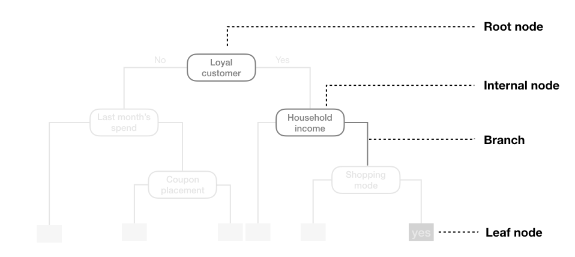

Student Attended Outcome
1 A Yes Pass
2 B Yes Pass
3 C Yes Fail
4 D No Fail
5 E No Fail
6 F No PassDecision Trees
Overview of Decision Trees
A decision tree is a predictive model that uses a tree-like structure to make decisions.
It splits data into smaller and smaller groups based on feature values, ultimately leading to a prediction at the “leaves” (the end points of the tree).
Classification trees: predict a category (e.g., spam vs. not spam).
Regression trees predict a continuous outcome (e.g., house price).
The name comes from the fact that the model looks like a flowchart: you start at the root (the top of the tree), follow branches based on yes/no or threshold-based questions about the features, and end up at a leaf with a prediction.
Parts of a Decision Tree
- Root Node: The top of the tree where the first split occurs. It contains all the data.
- Internal Nodes: Points where the data is split based on a feature. Each internal node represents a decision based on a feature value.
- Branches: The lines connecting nodes, representing the outcome of a decision.
- Leaf Nodes: The end points of the tree where a prediction is made.
- Splits: The conditions used to divide the data at each internal node.

Overview: How do Decision Trees Work?
The tree is built by repeatedly asking:
Which feature and split best separates the data?
For classification tasks, we want splits that make the groups as “pure” as possible (mostly one class).
For regression tasks, we want splits that minimize the variability within each group, often using mean squared error (MSE).
At each step, the algorithm chooses the best feature and split point, divides the data, and repeats until:
- The nodes are pure enough,
- The maximum depth is reached, or
- There are too few samples to keep splitting.
What Exactly is Purity?
In the context of a decision tree, a node is pure if it contains only examples from a single class.
For example, suppose you’re predicting whether students pass or fail a project based on whether they attend class.
Step 1: The Roote Node
At the root node, we have all 6 students: 3 “pass” and 3 “fail” (50% pure).
If a node has 20 students and all of them are “pass”, that node is 100% pure.
Since the node has 3 “pass” and 3 “fail,” it’s very impure.
A common measure of impurity is the Gini impurity, which quantifies how often a randomly chosen element would be incorrectly labeled if it was randomly labeled according to the distribution of labels in the subset.
\[
Gini = 1 - p(Pass)^2 - p(Fail)^2
\]
or more generally,
\[ Gini = 1 - \sum (p_i)^2 \]
Step 2: Splitting on Attendance
Now let’s split our data based on attendance.
Gini_Yes Gini_No
0.4444444 0.4444444 Now, after the split:
- The “Yes” group has 2 “Pass” and 1 “Fail” (Gini impurity = 0.444).
- The “No” group has 2 “Fail” and 1 “Pass” (Gini impurity = 0.444).
Both groups are still impure, but we have better separated the students based on attendance.
Alternative Measures of Purity
Other common measures of impurity include:
Entropy:
Measures the uncertainty in a dataset. Lower entropy means higher purity.
\[ Entropy = - \sum p_i \log_2(p_i) \] Misclassification Error:
The fraction of samples that do not belong to the majority class in a node.
\[
Misclassification\ Error = 1 - \max(p_i)
\]
Like the Gini coefficient, these measures help the algorithm decide the best splits to create purer nodes.
How Purity Guides Splitting
At each node, the algorithm evaluates all possible splits across all features and selects the one that results in the highest increase in purity (or the largest decrease in impurity).
At each step, a decision tree faces the question:
Which feature should I split on, and at what threshold?
To answer this, it evaluates all possible splits and picks the one that produces the biggest increase in purity of the child nodes compared to the parent node.
Step 1: Impurity at the Parent Node
- The parent node contains some mix of classes.
- Its impurity (e.g., Gini or entropy) is calculated.
Step 2: Impurity at Candidate Splits
For each candidate feature and possible split point:
- Divide the data into two (or more) child nodes.
- Compute the impurity of each child node.
- Take a weighted average impurity across the children:
\[ G\_{\text{split}} = \sum_{j=1}^{m} \frac{N_j}{N} , G_j, \] where, - $ G_{}$ is the impurity after the split. - \(m\) is the number of child nodes. - \(N_j\) is the number of samples in child node \(j\). - \(N\) is the total number of samples in the parent node. - \(G_j\) is the impurity of child node \(j\).
Our goal is to minimize this quantity \(G_{\text{split}}\). The split that results in the lowest weighted impurity is chosen.
Step 3: Information Gain or Impurity Reduction
For every feature we can then measure the “goodness” of a split as the reduction in impurity
\[ \Delta G = G_{\text{parent}} - G_{\text{split}}, \] where, - $ G is the reduction in impurity (information gain). - \(G_{\text{parent}}\) is the impurity of the parent node. - \(G_{\text{split}}\) is the weighted impurity after the split.
Step 4: Choosing the Best Feature
- The tree tries every possible feature (and, for numeric features, possible threshold values).
- The feature/threshold pair that gives the largest impurity reduction is chosen for the split.
- This process repeats recursively, growing the tree until stopping conditions are met:
- max depth
- minimum samples, or
- node purity
How Low Can You Go?
Decision trees can grow very deep, creating many splits to perfectly classify the training data. However, this can lead to overfitting, where the model captures noise instead of the underlying pattern. To prevent this, we can set limits on the tree’s growth, such as:
- Maximum Depth: Limit how deep the tree can go.
- Minimum Samples per Leaf: Require a minimum number of samples in each leaf node.
- Minimum Samples to Split: Require a minimum number of samples to consider a split.
- Pruning: Remove branches that do not provide significant predictive power.
By controlling the tree’s complexity, we can improve its ability to generalize to new, unseen data. This balance between fitting the training data and maintaining generalization is crucial for building effective decision tree models.
Early Stopping Criteria
To prevent overfitting and ensure that the decision tree generalizes well to unseen data, we can implement early stopping criteria during the tree-building process. Common early stopping criteria include:
Maximum Depth
Limit the maximum depth of the tree. A shallower tree is less likely to overfit. For example, we may set a maximum depth of 5 or 10 levels. If we choose too shallow a tree, it may underfit the data, however, the variance will likely be lower. If we choose too deep a tree, it may overfit the data, but, the variance will likely be higher.
Minimum Samples per Leaf
We can also set a minimum number of samples that must be present in a leaf node. This prevents the tree from creating leaves that are too specific to the training data.
On one hand we might allow for a single observation in a leaf, which would likely lead to overfitting. On the other hand, we might require at least 10 or 20 samples in each leaf, which could help the model generalize better.
Minimum Impurity Decrease
We could also only allow a split if it results in a significant decrease in impurity. This ensures that splits are meaningful and contribute to the model’s predictive power.
Pruning
Another approach to controlling tree complexity is pruning, which involves removing branches that do not provide significant predictive power.
Pruning can be done in two main ways:
Post-Pruning
This involves growing the full tree and then removing branches that do not improve performance on a validation set. This can be done by evaluating the tree’s performance after removing certain branches and keeping the changes that lead to better generalization.
Pre-Pruning
We could also add a penalty for tree complexity to the loss function used to evaluate splits. This encourages the model to prefer simpler trees that still perform well. Smaller penalties will lead to larger trees, while larger penalties will lead to smaller trees.
As with regularization, we would evaluate multiple models across a spectrum of hyperparamaters (penalty parameters) and then use cross-validation to identify the optimal value that generalizes best to unseen data.
In the rpart package, which we will use later, the complexity parameter cp controls how large a decision tree can grow before it is pruned. It is the main regularization tool that balances tree complexity against generalizability.
How cp Works
- Each split in a tree must reduce the lack of fit by at least
cp × error.
- If the reduction is smaller, the split is pruned away.
- Large
cp→ smaller tree (simpler, more bias, less variance).
- Small
cp→ larger tree (complex, less bias, more variance).
Mathematically, the cost-complexity criterion is:
\[
R_{alpha(T)} \;=\; R(T) + \alpha |T|,
\] where, - \(R(T)\): is the predictor error
- \(T\): number of terminal nodes.
- \(\alpha\): penalty hyperparameter (analogous to cp)
Limitations of Standard Decision Trees
In their standard form, decision trees have several limitations:
Overfitting and Lack of Generalization
- Trees can keep splitting until each leaf is pure, perfectly fitting the training data.
- This often captures noise and leads to poor generalization.
High Variance / Instability
- Small changes in training data can lead to very different tree structures.
- This instability makes them unreliable when used alone.
Bias Toward Features with Many Levels
- Features with many unique categories (e.g., IDs, zip codes) can dominate splits.
- The tree may overvalue these even when they’re not meaningful.
Greedy, Locally Optimal Splitting
- Trees choose the best split at each step, but this is only a local optimum.
- They can miss better global solutions.
Implementation in R
In R we can use the rpart package to create decision trees. The rpart package implements the widely popular CART (Classification and Regression Trees) algorithm for building decision trees.
Decision Trees: Personality Example
We will use the following libraries:
library(rpart)
library(caret)
library(rsample)
library(tidyverse)
library(recipes)
library(rattle)
library(titanic)
library(psych)Let’s try to predict the variable OPN8 using a decision tree. Remember, OPN8 is a dichotomous variable indicating whether a respondent strongly agrees (1) or does not strongly agree (0) with the statement “I use difficult words.” We will use the same data preprocessing steps as before and predict our outcome using all the personality items included in our example data.
data <- read.csv("data/data-final-shuffled.csv")
dichotomous_vars <- colnames(data)[sapply(data, max) == 1]
character_vars <- colnames(data)[sapply(data, class) == "character"]
cat_vars <- c(character_vars,dichotomous_vars)
data[cat_vars ] <- lapply(data[cat_vars ], as.factor)
target <- "OPN8"
data <- data[!is.na(data[,target]),]
set.seed(123)
split <- initial_split(data, prop = 0.7, strata = target)
data_train <- training(split)
data_test <- testing(split)Again, we can recreate our recipe from the in-class activity.
formula_string <- as.formula(paste(target, "~ ."))
blueprint <- recipe(formula_string, data = data_train) %>%
step_impute_bag(all_predictors()) %>%
step_dummy(all_factor_predictors(), one_hot = FALSE) Now, let’s fit a decision tree model using 10-fold cross-validation to tune the complexity parameter (cp). The cp parameter controls the size of the decision tree and helps prevent overfitting by penalizing more complex trees. Here, tuneLength specifies the number of different cp values to try during the tuning process.
cv_model_1 <- train(
blueprint,
data = data_train,
method = "rpart",
trControl = trainControl(method = "cv", number = 10),
tuneLength = 10
)After training we can visualize the cross-validation results to see how the model’s performance varies with different values of the complexity parameter (cp). Here we see that the model achieves the best accuracy with a cp value of approximately 0.05.
ggplot(cv_model_1)
We can also visualize the final decision tree using the fancyRpartPlot function from the rattle package. This function provides a clear and informative visualization of the decision tree structure, including the splits, nodes, and predicted classes.
fancyRpartPlot(cv_model_1$finalModel)Now, let’s evaluate the model’s performance using cross-validation results and a confusion matrix.
# Make predictions on the test set
pred_class <- predict(cv_model_1, data_train)
# create confusion matrix
confusionMatrix(
data = relevel(pred_class, ref = "1"),
reference = relevel(data_train[,target], ref = "1")
)Confusion Matrix and Statistics
Reference
Prediction 1 0
1 204 71
0 105 319
Accuracy : 0.7482
95% CI : (0.7143, 0.78)
No Information Rate : 0.5579
P-Value [Acc > NIR] : < 2e-16
Kappa : 0.4837
Mcnemar's Test P-Value : 0.01287
Sensitivity : 0.6602
Specificity : 0.8179
Pos Pred Value : 0.7418
Neg Pred Value : 0.7524
Prevalence : 0.4421
Detection Rate : 0.2918
Detection Prevalence : 0.3934
Balanced Accuracy : 0.7391
'Positive' Class : 1
Decision Trees: Titanic Example
Let’s read in the Titanic training data from the titanic package and take a look at the data.
This package comes with data that is pre-split into training and test sets.
titanic_train <- titanic::titanic_trainHere, the features included in titanic_train:
Survived: Whether the passenger survived (1) or not (0).
Pclass: Passenger class (1st, 2nd, 3rd).Sex: Sex of passenger.Age: Age of the passenger.SibSp: Number of siblings/spouses aboard.Parch: Number of parents/children aboard.Fare: Ticket fare.Embarked: Port of embarkation (C = Cherbourg, Q = Queenstown, S = Southampton).
We can get basic desciptives using the psych package.
describe(titanic_train) vars n mean sd median trimmed mad min max range
PassengerId 1 891 446.00 257.35 446.00 446.00 330.62 1.00 891.00 890.00
Survived 2 891 0.38 0.49 0.00 0.35 0.00 0.00 1.00 1.00
Pclass 3 891 2.31 0.84 3.00 2.39 0.00 1.00 3.00 2.00
Name* 4 891 446.00 257.35 446.00 446.00 330.62 1.00 891.00 890.00
Sex* 5 891 1.65 0.48 2.00 1.68 0.00 1.00 2.00 1.00
Age 6 714 29.70 14.53 28.00 29.27 13.34 0.42 80.00 79.58
SibSp 7 891 0.52 1.10 0.00 0.27 0.00 0.00 8.00 8.00
Parch 8 891 0.38 0.81 0.00 0.18 0.00 0.00 6.00 6.00
Ticket* 9 891 339.52 200.83 338.00 339.65 268.35 1.00 681.00 680.00
Fare 10 891 32.20 49.69 14.45 21.38 10.24 0.00 512.33 512.33
Cabin* 11 891 18.63 38.14 1.00 8.29 0.00 1.00 148.00 147.00
Embarked* 12 891 3.53 0.80 4.00 3.66 0.00 1.00 4.00 3.00
skew kurtosis se
PassengerId 0.00 -1.20 8.62
Survived 0.48 -1.77 0.02
Pclass -0.63 -1.28 0.03
Name* 0.00 -1.20 8.62
Sex* -0.62 -1.62 0.02
Age 0.39 0.16 0.54
SibSp 3.68 17.73 0.04
Parch 2.74 9.69 0.03
Ticket* 0.00 -1.28 6.73
Fare 4.77 33.12 1.66
Cabin* 2.09 3.07 1.28
Embarked* -1.27 -0.16 0.03Now, let’s fit our regression tree model to the Titanic data. We will predict the Survived variable using all other features in the dataset.
titanic_train$PassengerId <- NULL
titanic_train$Name <- NULL
titanic_train$Ticket <- NULL
titanic_train$Cabin <- NULL
titanic_train$Survived <- as.factor(titanic_train$Survived)
titanic_train$Sex <- as.factor(titanic_train$Sex)
blueprint_titanic <- recipe(Survived ~., data = titanic_train) %>%
step_impute_bag(all_predictors()) %>%
step_dummy(all_factor_predictors(), one_hot = FALSE)
cv_model_titanic <- train(
blueprint_titanic,
data = titanic_train,
method = "rpart",
trControl = trainControl(method = "cv", number = 10),
tuneLength = 20
)ggplot(cv_model_titanic)
We can also visualize the final decision tree using the fancyRpartPlot function from the rattle package.
fancyRpartPlot(cv_model_titanic$finalModel)
Now, let’s evaluate the model’s performance using cross-validation results and a confusion matrix.
# Make predictions on the test set
pred_class <- predict(cv_model_titanic, titanic_train)
# create confusion matrix
confusionMatrix(
data = relevel(pred_class, ref = "1"),
reference = relevel(titanic_train[,"Survived"], ref = "1")
)Confusion Matrix and Statistics
Reference
Prediction 1 0
1 271 48
0 71 501
Accuracy : 0.8664
95% CI : (0.8423, 0.8881)
No Information Rate : 0.6162
P-Value [Acc > NIR] : < 2e-16
Kappa : 0.714
Mcnemar's Test P-Value : 0.04372
Sensitivity : 0.7924
Specificity : 0.9126
Pos Pred Value : 0.8495
Neg Pred Value : 0.8759
Prevalence : 0.3838
Detection Rate : 0.3042
Detection Prevalence : 0.3580
Balanced Accuracy : 0.8525
'Positive' Class : 1